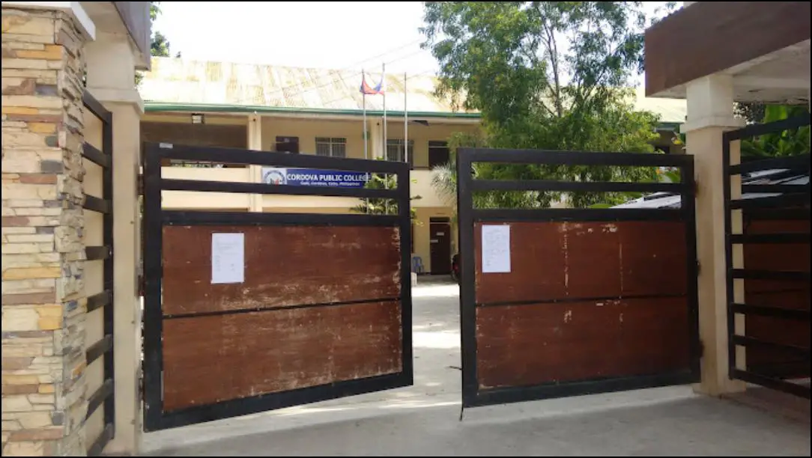

I am a 2nd year student of CPC (Cordova Public College) taking the course of
BSIT (Bachelor of Science in Information Technology). I do like coding because
It's one of my interest to do about technology, since todays generation is more
on high tech technologies. I hope that even if I don't have much skills to perform
or to build codes and websites, I still want to graduate and finish my studies to
make myself proud and to my love ones.

Project
This project is made by group, but since I was part of the group and how the
website is structured I can still call this as my project on the subject of
Web Development. This project did take many weeks to make and to design, I am
proud of what I did on my part of this website because I can and everyone
else can see my work. I am proud because even if I was a 1st year student before,
I made it to 2nd year and I am still on going for this journey as a BSIT student.
Educational Background
I graduated in Babag National High School in the year of 2024, I graduated
as a ICT-CSS student when I was a senior high school.